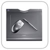
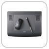

|
|||||||||||||||||||||||||||||||||||||||||||||||||||||||
Escolha as dicas pelo software |
|
| Adobe Photoshop | |
Corel Painter |
|
Windows Vista |
|
Dicas de utilização |
|

 |
 |  |  |
Pen Partner
Cintiq 21UX
|
|||||||||||||||||||||||||||||||||||||||||||||||||||||||||||||||||||||
|
|||||||||||||||||||||||||||||||||||||||||||||||||||||||||||||||||||||
|
|
||||||||||||||||||||||||||||||||||||||||||||||||||||||||||||||||||||
Pen Partner |
Volito | Graphire4 | Bluetooth | Intuos3 | Cintiq 21UX |
PL-720 | |||||||||||||||||||||||||||||||||||||||||||||||||||||||||||||||